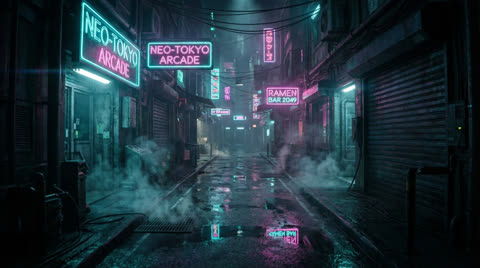

Analogue failure modes turned into design. Use sparingly — once per video max for datamosh. CRT scanlines and chromatic aberration are the signatures to reach for when you need Y2K, retro, or "this signal is not okay". Every glitch should be motivated by a cut, a beat, or a revelation.
